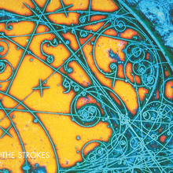

Is This It

"Is This It" by The Strokes is a landmark debut album that encapsulates the raw energy and revitalization of rock music in the early 21st century. Released in 2001, the album quickly became a defining moment for indie rock, blending garage rock influences with a minimalist and effortlessly cool New York City vibe. The Strokes, led by the charismatic Julian Casablancas, crafted a sound that felt simultaneously nostalgic and contemporary. The album's stripped-down production, characterized by crisp guitar riffs and Casablancas' distinctive vocals, set it apart from the polished mainstream rock of its time. Songs like "Last Nite" and "Someday" showcase infectious hooks and memorable lyrics, contributing to the album's timeless appeal. "Is This It" remains a seminal work, influencing a generation of musicians and solidifying The Strokes as a cultural force that reinvigorated rock music for a new era.